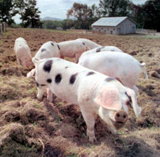
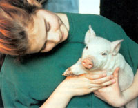
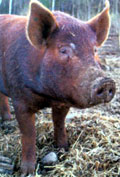
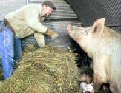

Raise your own pigs for better meat... and porcine 'tiller power'.
If you want to produce your own delicious, chemical-free meat, look no further than the homestead hog. Pigs can be raised on pasture as grazing animals; they thrive on a varied diet that also can include table food and garden scraps, extra milk or whey, and whatever other edibles are available. Pigs' natural rooting instincts can be tapped to help with a variety of farm chores, too, as many delighted homesteaders have discovered. Any way you look at it, raising pigs is an interesting way to opt out of the inhumane industrial meat production system.
Joel Salatin, an innovative farmer and author of the books You Can Farm and Family Friendly Farming, finishes more than 200 hogs a year on his diversified Polyface Farm at Swoope, Va.
Some farmers keep sows and breed them each year for a "crop" of piglets, but Salatin buys "feeder" or "weaner" pigs from such folks. He purchases the animals when they are 2 to 3 months old, feeds them until they reach market weight and sells them for meat.
The varied diet pigs enjoy at Polyface produces pork Salatin describes as superior in taste to the conventional product. "Our pork is very firm," he says. "It actually weighs more per cubic foot than industrial pork. It is also rose-colored-not white. Pork should be a nice rose color, not an anemic white."
And on Polyface Farm, feeder pigs earn their keep. "We use the pigs two different ways," Salatin says. "One way is to do our composting." Frequently in winter, he brings his cattle indoors, which creates a large quantity of straw bedding and cow manure that must be prepared for composting in the spring. As he applies fresh bedding material, he adds some shelled corn. Then, rather than use an expensive, fossil-fuel burning tractor to turn the materials, Salatin moves his pigs into the barn.
"They go right for the corn," Salatin says, "That's their paycheck." As they root for the grain, the pigs chum up the packed manure and straw, mixing it together and breaking it into smaller pieces. After several weeks, all the bedding in the barn has been thoroughly mixed.
The pigs also are used to "till" some fields before planting and to clear land for pasture. Salatin maintains a rotating system of paddocks by using moveable electric fencing. For him, a long-term goal has been to convert more of his forested acres to savanna-like pasture, and the pigs have become integral to this effort. Over time, setting up paddocks for the pigs in the forest and letting them turn up the soil is changing the pattern of vegetation to favor perennial grasses instead of trees. For the pigs, this environment couldn't be better. Lightly forested land provides the animals with shade for staying cool and the opportunity to forage, giving them plenty of exercise and the chance to express their natural rooting instincts.
"We're always trying to utilize the assets of the animal so that it expresses its animalness, and a pig fully expresses when it's 'plowing.' A fully expressed pig is a happy pig," Salatin says.
Pigs can be useful on the farm even in small numbers. David and Lise Abazs don't typically raise livestock, but they used three pigs to convert an overgrown field into an orchard on their organic Round River Farm, at Finland, Minn.
"We wanted to do it so we didn't have to bulldoze," David Abazs says. "We didn't want the 'traditional' way of clearing the land. When you have 2 feet of topsoil, and it takes 1,000 years to make 1 inch, you don't want to lose any of it."
Tired of working their rocky ground with pickaxes, the Abazses decided that using pigs would help speed up the task. They bought three, constructed a mobile pen for the animals, and then kept moving the pen with the pigs in it across the overgrown field they wanted to clear.
The pigs even cleared away large tree roots; the couple would just sprinkle a little corn beside the roots and let their "crew" dig. By the end of the summer, the pigs had cleared the field. For the Abazses, the primary goal of raising pigs was to clear the land, but they butchered the animals when the "plowing" was done and discovered the fresh, rich-tasting meat was an added benefit. "We had a big feast," David Abazs says. "People had never eaten real pork before."
FIELDS, NOT FEEDLOTS
But raising pigs as Salatin and the Abazses do-on pasture with access to fresh air and sunshine-is not the norm. Most pork comes from largescale confinement operations where pigs are raised indoors, crowded together on a concrete floor that makes rooting impossible, to say nothing of turning around or lying down comfortably.
- Edward O. Wilson, in Biophilia
"In a factory hog operation, because the hogs are crowded so closely together they tend to always be unhealthy or sick," says Diane Harz, communications and marketing director of the GRACE Factory Farm Project ( www.factoryfarm.org ). GRACE, which stands for Global Resource Action Center for the Environment, is a nonprofit environmental organization that aims to eliminate factory farming in favor of sustainable and humane food production.
Hatz says the unhealthy atmosphere of large confinement hog operations stresses the animals, and increases the potential for disease to spread. To counter that, the pigs have to be given antibiotics regularly. "Another problem with factory farms is that a lot of the animals never see sunlight until the day they're taken off to be slaughtered," she says.
Factory hog production is widespread, but Hatz says GRACE believes the industry trend can be countered if enough people support farmers who produce pork sustainably. "On a sustainable farm, the land can carry the weight of the animals," Harz says. "One of the definitions of sustainable is that what's taken out is put back in."
That includes manure. One of the biggest problems with factory hog farms is that concentrated waste from thousands of animals creates significant air and water pollution. Alternatively, when a small number of hogs rotates through a pasture, the animals produce a manageable amount of valuable manure that in turn enriches the pasture grasses.
PRESERVING HERITAGE HOGS
Among people interested in sustainably raised meat are those concerned about the n eed to preserve heritage livestock breeds. The modern hog industry relies on only three or four breeds that have been developed for indoor operations. As a result, many of the qualities that help a pig survive outdoors-such as hair and dark-colored skin, which help protect pigs from sunburn-are disappearing from the gene pool.
The American Livestock Breeds Conservancy (ALBC) is one organization working with farmers across the country to preserve heritage livestock breeds and the valuable genetic diversity they carry. Other organizations working in this field include the New England Heritage Breeds Conservancy and Rare Breeds Canada.
It is possible to raise conventional breeds of hogs on pasture-on Polyface Farm, Salatin raises three or four standard breeds-but on Flying Pigs Farm at Shushan, N.Y., ALBC members Jennifer Small and Mike Yezzi have found that heritage breeds and sustainable farming are a winning combination.
"I would say that heritage breeds are much hardier outdoors," Small says, noting that the Tamworth (one from her farm is pictured above) is especially useful for clearing weedy fields. "Tamworths are often used to clear pasture because they are so rambunctious," she says.
Small and Yezzi began their pastured hog operation in 2000 with just three conventional pigs-"pink pigs" as Small calls them. They have since switched entirely to three heritage breeds, and last year, they finished more than 100 hogs.
The main breeds raised on Flying Pigs Farm are Gloucestershire Old Spots, (see photo, Page 38) large, round pigs with white coats and black spots, and recognized for their mothering abilities; Tamworths, tall, lean pigs that do well in a variety of climates and are known for their hardiness and distinctive dark red coloring; and Large Blacks, which are pigs with dark coats and rapid growth rates that do especially well on grass. The natural hardiness of these breeds is a useful asset because the pigs are outside year-round-grazing on pasture or foraging in the woods in the spring, summer and fall, and rooting in the snow in the winter.
But hardiness is only one reason the owners of Flying Pigs Farm switched to heritage breeds; taste is another. Their second year in business, the couple bought seven "pink pigs" and seven Large Blacks. "When we went to sell the meat in the fall, people started raving about the quality of the Large Blacks," Small says. "Their meat tends to be more moist and finer grained than supermarket pork."
Small says she thinks the rich taste of Flying Pigs Farm heritage pork also is influenced by the varied diet the animals eat and the respectful, humane way they are treated during their lives.
Charlie Bradley of Mansfield Center, Conn., another rare breeds enthusiast, sold the first heritage hogs to Flying Pigs Farm. He says he isn't surprised by the positive response the couple receive on the quality of their pork because that's been his experience, too.
"I've found it to be very tender, very tasty, just very good pork," Bradley says. "It is the quantity and quality of fat in heritage breeds of hogs that give the meat its superior flavor when compared to modern breeds that have been bred to produce extremely lean meat."
Bradley keeps about 10 sows to raise feeder pigs that he sells locally. He says it isn't necessarily more expensive to buy a heritage breed, but they may be more difficult to find; he traveled to Canada to find his first heritage livestock.
It usually does cost a bit more to buy meat from heritage breeds, but Small says there are good reasons for the higher price tag: Heritage breeds take longer to reach market weight than conventional breeds, and because they also produce a higher percentage of body fat, fewer of those pounds consist of marketable cuts. Small says the high quality and great flavor of the meat nevertheless creates steady demand from customers willing to pay the premium. "Cost per pound of our meat is definitely higher than cheap factory-farm pork," she says. "What we tell our customers is to eat less meat, but eat better-quality meat."
Ultimately, she says, it's the knowledge that the meat from her pigs was produced sustainably and humanely that makes raising the animals worth the effort. "I know that I've treated them with respect and they've had a good life," she says.
Related Article:
Pork Production Basics
Mother Earth News
|
 Robert F. Bukaty/AP Photo Gloucestershire Old Spot pigs, a heritage swine breed, enjoy the sunshine and open fields at Kelmscott Farm in Lincolnshire, Maine. |
 Tara Neil Many people who raise pigs start small: A simple strategy is to buy a young pig and raise it to market weight (See "" Pork Production Basics "") |
 ""Pigs are among the most intelligent of animals. Some biologists believe them to be brighter than dogs, roughly the rivals of elephants and porpoises."" |
|
 An Iowa farmer checks on a sow with a new litter. The pigs on this organic farm are raised free-range and hormone-free. |
|
|